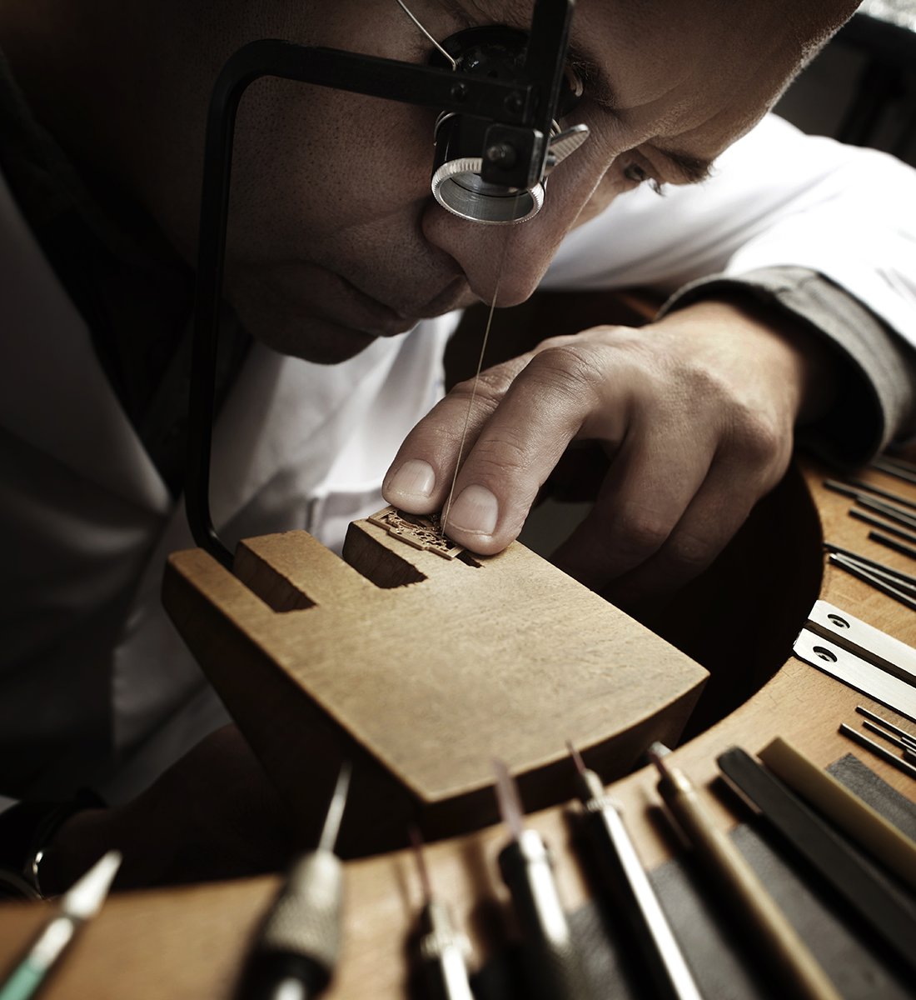

The Making Story of Jeager-leCoultre
예거 르쿨트르의
아이덴티티를 만드는 전체 과정
Beyond the Gesture
예거 르쿨트르의
매뉴팩쳐를 소개합니다
Our Makers
예거 르쿨트르 사람들의
이야기
Our Maison - Episode Series
예거 르쿨트르를 만드는
기술들
The Art of Precision
정확함과 세밀함의 미학
The Making Story of Jeager-leCoultre
예거 르쿨트르의
아이덴티티를 만드는 전체 과정

디자인
연필과 하얀 종이, 그리고 예거 르쿨트르의 철학을 간직한 디자이너의 손길을 통해 전설로 남을 시계 다이얼이 디자인됩니다. 가장 먼저 스케치 드로잉으로 아이디어를 구체화합니다. 디자이너들의 첫번째 임무는 아이디어를 선으로 표현하고 기능을 드러냄으로써 새로운 콘셉트를 시각화하는 것입니다. 이들은 매뉴팩쳐의 디자인을 해석해 내는 탁월한 전문가들입니다. 미래를 향한 눈을 가지고 현 시대가 원하는 스타일에 집중하는 이들은 예거 르쿨트르의 오랜 전통을 충실히 이어가고 있습니다. 과거와 현재, 미래를 넘나들며 시대를 아우르는 조화로움이 예거 르쿨트르의 시계 컬렉션을 더욱 특별하게 만듭니다.
부품 장식
기계 공정을 마친 칼리버 부품들은 마치 하나의 예술 작품처럼 장인의 손으로 섬세하게 장식됩니다. 시계의 기술적 완벽함과 미적인 외관에 걸맞게, 브릿지와 플레이트 내부의 다양한 베드와 카운터싱크, 그리고 다른 부품들에 가려 보이지 않는 부품들 조차도 초소형 공간 안에서 장식 공정을 거쳐 완벽한 디테일로 완성됩니다.
Beyond the Gesture
예거 르쿨트르의
매뉴팩쳐를 소개합니다
스위스 쥐라 산맥의 발레드주(Vallée de Joux) 중심에 위치한 예거 르쿨트르 매뉴팩쳐는 1883년 창립 이래 지속적으로 자신의 창의성과 독창성을 새롭게 하고 있습니다. 180가지의 각기 다른 분야의 기술들이 하나의 지붕 아래에서 함께 작업하며 시계의 심장과 초소형 부품에 생명을 불어넣고 있습니다. 예거 르쿨트르 타임피스 탄생에 요구되는 디자인, 조립, 장식 그리고 조정 등 모든 단계는 그랑 메종 내부에서 이루어집니다.
예거 르쿨트르 메종은 창립 이후로 1,200개가 넘는 칼리버를 탄생시켜왔고 그로 인해 오늘 날 시계 제조 산업 내에서 고유의 명성을 얻을 수 있었습니다. 1931년 아르 데코의 영향을 받아 탄생한 리베르소, 클래식하면서도 정교한 남성적인 라인의 마스터, 그리고 영원히 멈추지 않는 애트모스 등의 상징적인 컬렉션은 매뉴팩쳐의 자부심과 충성도 높은 고객 만족에 대한 기반을 형성합니다.
